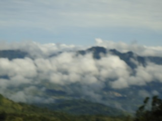
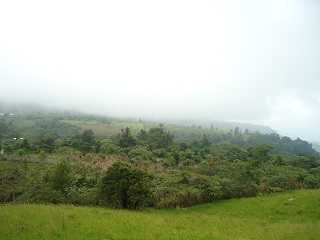
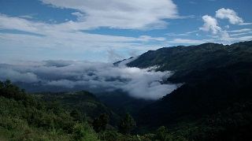
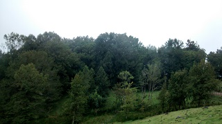
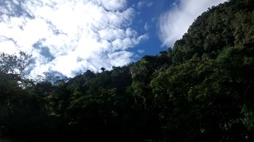

Es una región boscosa que está en el tramo carretero pueblo nuevo-rayón, formada de abundantes y extensa vegetación boscosa, que se extiende alrededor de 200 hectáreas.
últimamente debido a la poca conciencia y gran ignorancia de las personas que están en cargos políticos, dentro de este lugar el presidente municipal de rayón mando a poner el basurero municipal dentro de este lugar, lo que ha provocado la tala inmoderada de arboles en los alrededores, además de una gran contaminación en suelo y aire.
Se encuentra en el tramo carretero pueblo nuevo-rayón, aproximadamente a 7 km de rayón y de pueblo nuevo.
Estando en rayón o en pueblo nuevo, tomar el tramo carretero federal pueblo nuevo-rayón, con dirección a cualquiera de estos municipios, dependiendo de donde se encuentre, avanzar aproximadamente 7 km hacia el municipio cercano, hasta encontrar el señalamiento vehicular que dice 'selva negra'.
En el lugar usted puede practicar actividades como:





posicione el mouse o de click sobre las imágenes
{kind=link}
{kind=link}
{kind=link}
{kind=link}
{kind=link}